$1.240.000
Chaqueta de cuero · shorts · botas altas · bolso metalizado · gafas · pendientes
El nuevo modo de comprar moda: creado pensando en tu tipaje. Guarda y pide al instante lo que de verdad te favorece, todo en un mismo sitio.
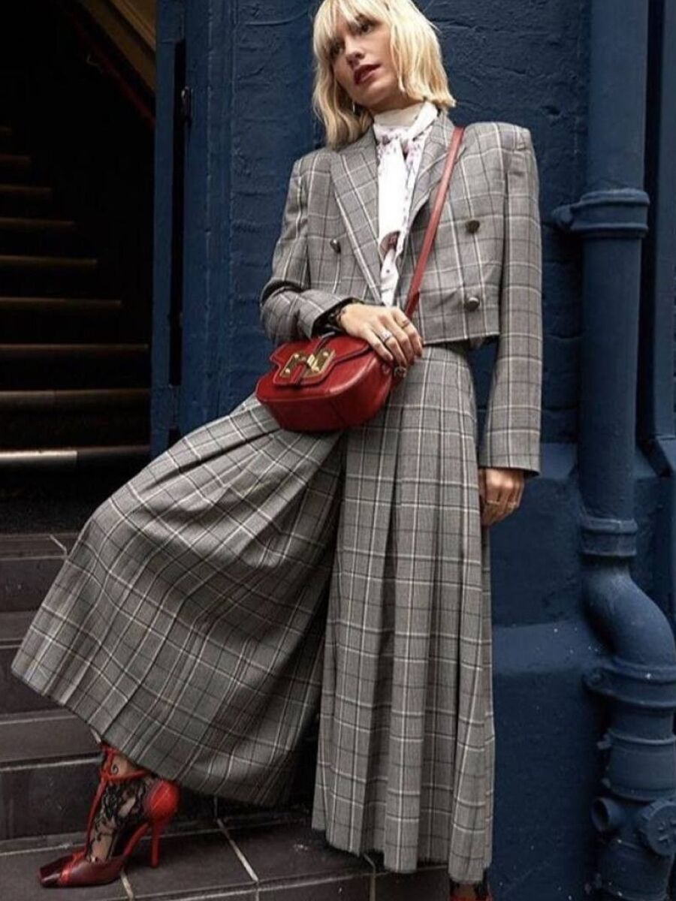
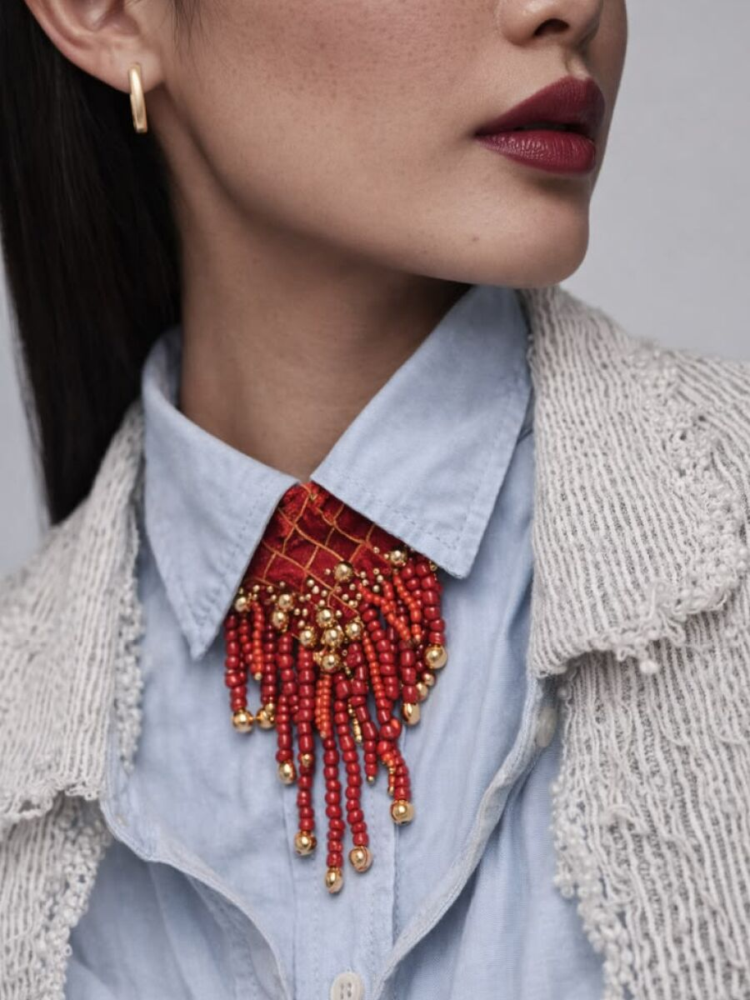
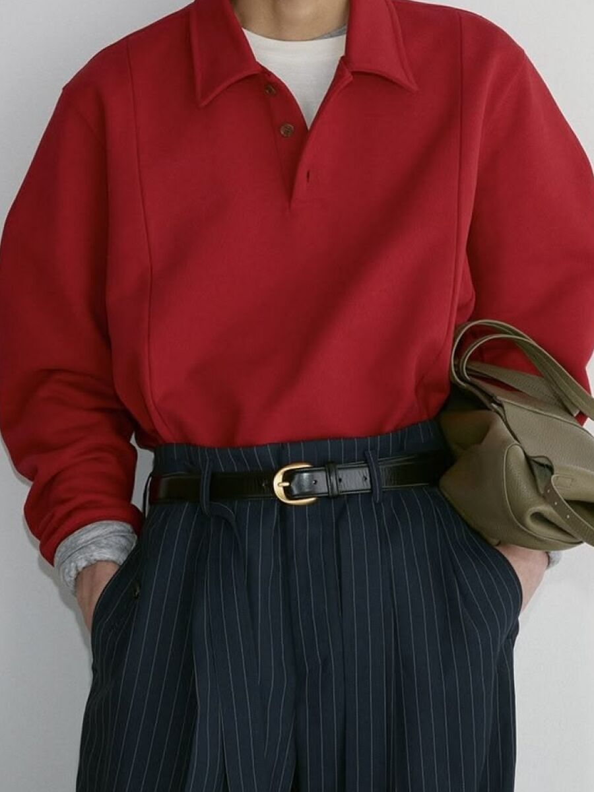
Full looks que encajan con tu apariencia. Llévatelos por piezas o enteros, sin importar la marca.
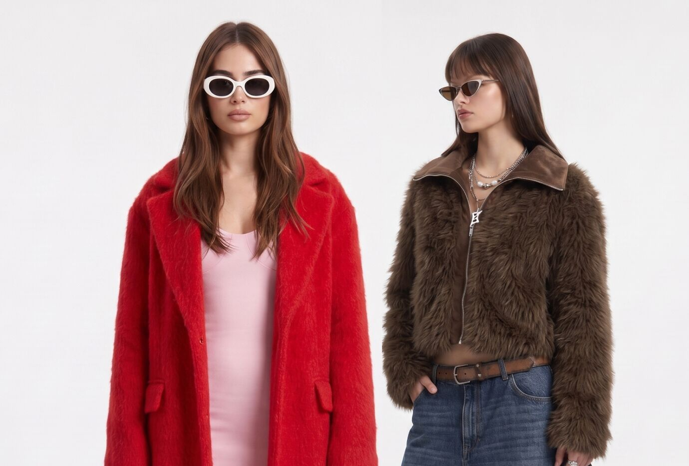
Componemos looks completos para tu tipo de imagen: leemos los rasgos de tu cara (mirada, nariz, labios, cabello) y las proporciones de tu figura, y elegimos solo lo que de verdad te favorece. Esta foto, por ejemplo, encaja en un tipaje Natural.
$1.240.000
Chaqueta de cuero · shorts · botas altas · bolso metalizado · gafas · pendientes

$720.000
Chaqueta oversize · camisa blanca · corbata · medias altas · mary jane

$760.000
Cardigan corto · top canalé · falda de tweed · medias · sandalias · bolso mini

$895.000
Chaqueta de pelo · vaqueros anchos · cinturón · botines chunky · bolso · gafas

$890.000
Chaleco a rayas · palazzo · cinturón · bolso tote · gafas aviator · brazaletes

$785.000
Pañuelo · top canalé · pantalón ancho · bailarinas · bolso de ante · brazaletes · gafas
Tres looks destacados en formato editorial. Desliza para verlos o deja que pasen solos.


Responde unas preguntas y sube una foto: la IA determina tu tipo, cromotipo y figura.
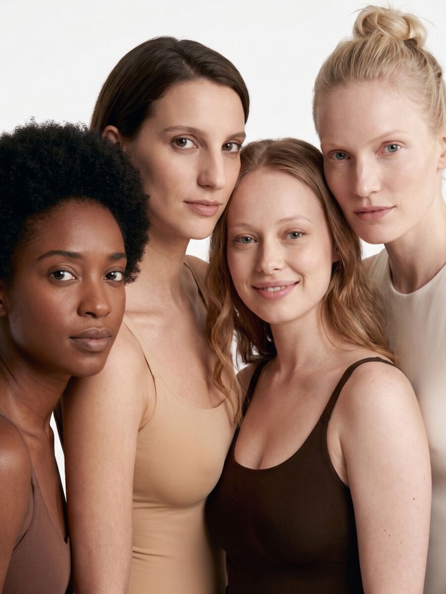
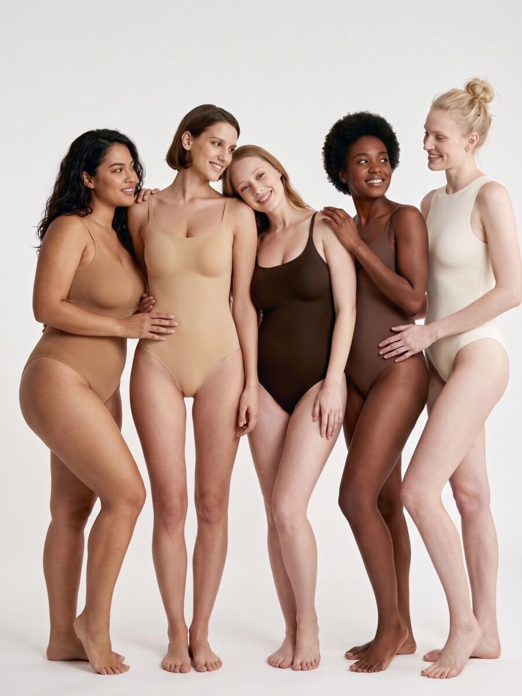
Las piezas que marcan la temporada. Pasa el cursor y busca looks que las lleven.
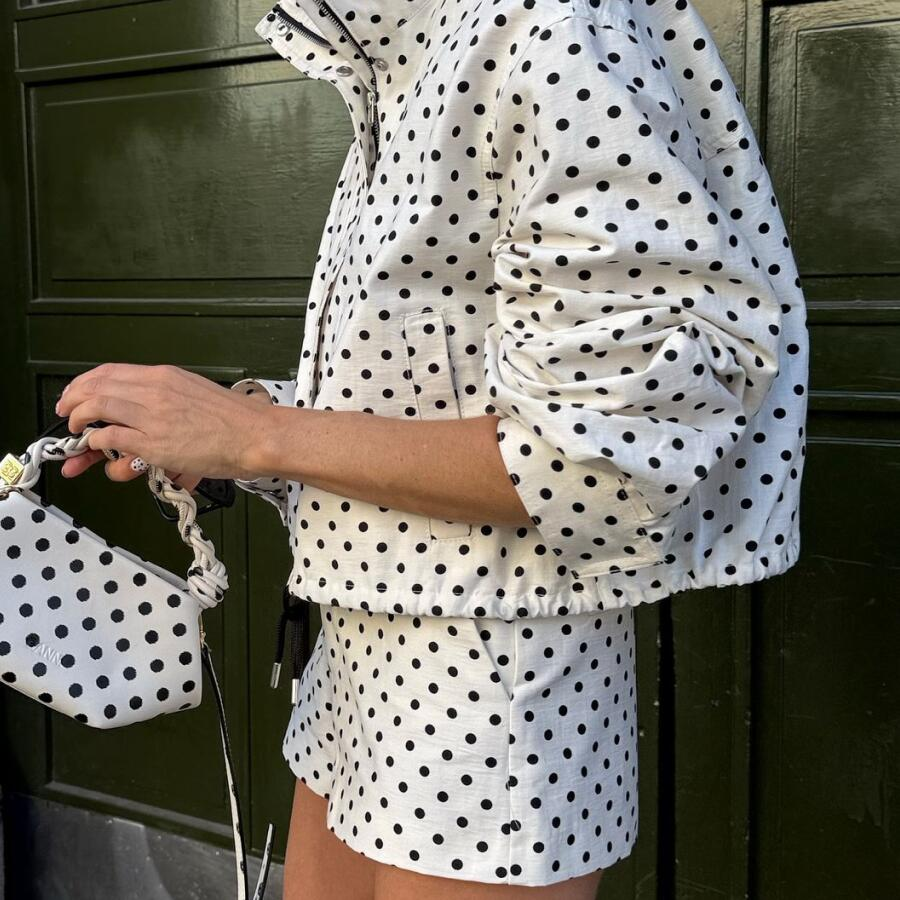
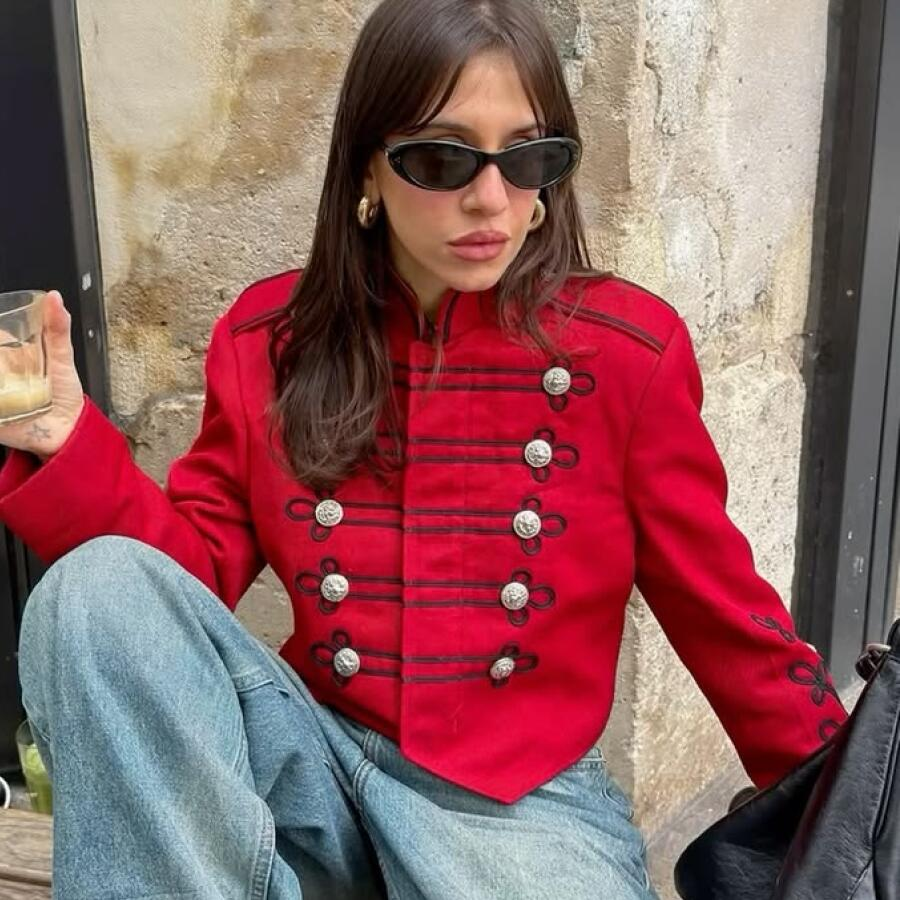
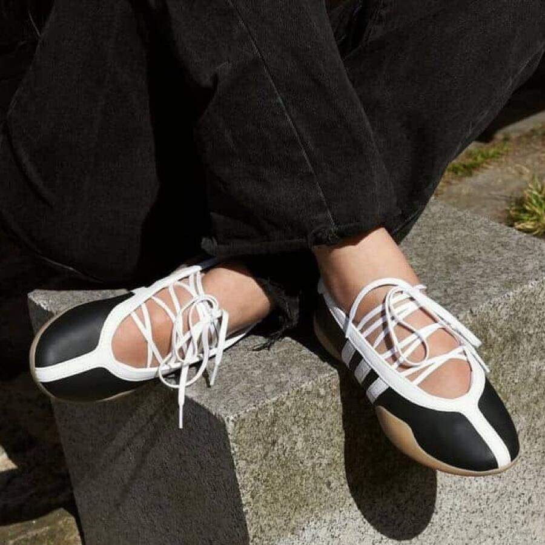
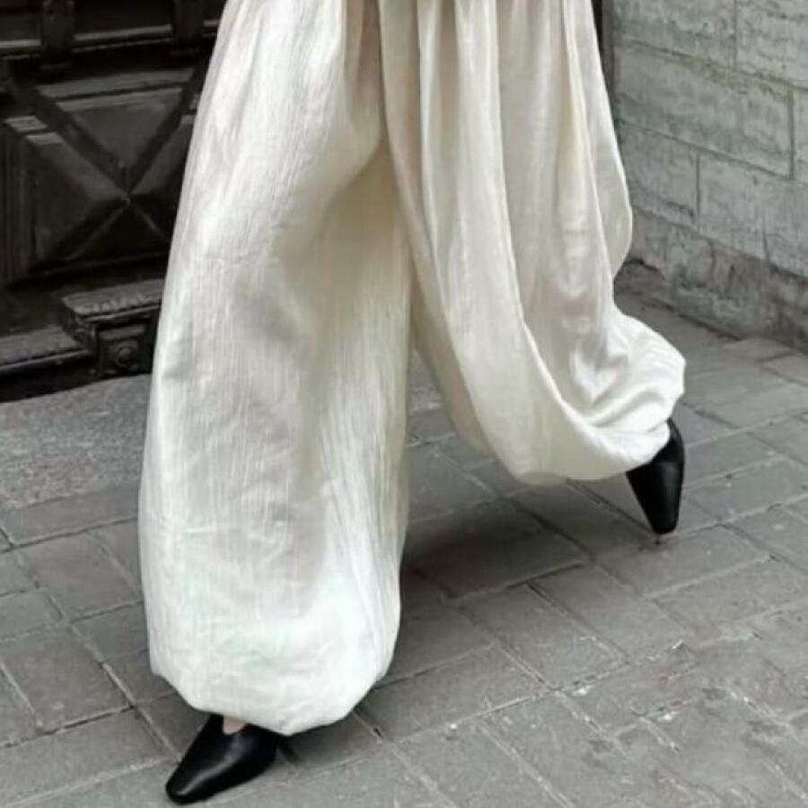
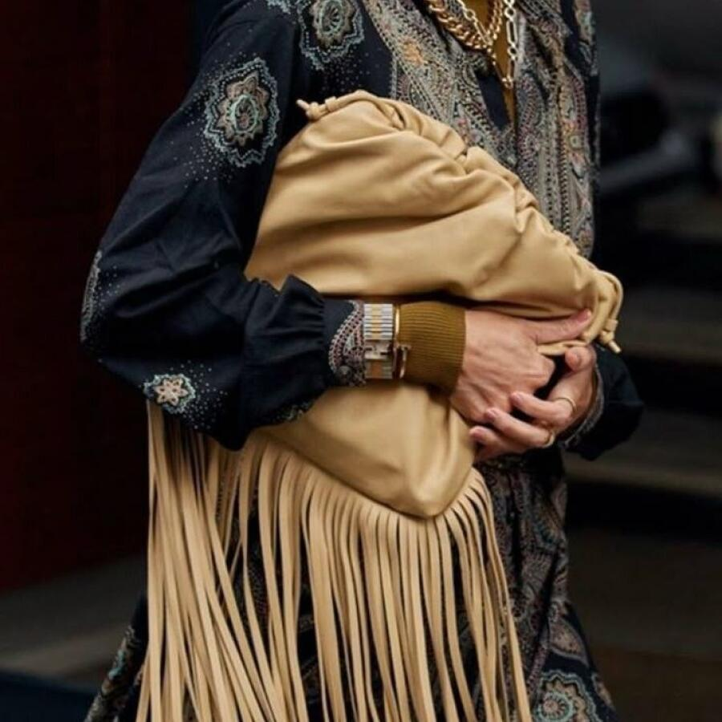
Lo que preguntan quienes llegan por primera vez y quienes ya compran aquí
Consolidamos el pedido por ti: pagas una sola vez y coordinamos el envío desde cada tienda directamente a tu puerta.
No. El envío se calcula una sola vez sobre el total del look, sin sorpresas al pagar.
Es la combinación de tu tipo de imagen (Kibbe), tu cromotipo y tu tipo de figura. Con esos datos te recomendamos looks que funcionan específicamente para ti.
El modelo analiza proporciones, subtono de piel y nivel de contraste. El resultado es orientativo y siempre puedes ajustarlo a mano.
Sí. En la vista de detalle puedes ajustar el set: quitar una prenda o cambiarla por una alternativa compatible en estilo y precio.
Son colecciones tuyas: guardas los looks que te gustan como pines y los organizas en tableros, igual que un moodboard.
Cada prenda sigue la política de su tienda de origen. Te mostramos esa información antes de comprar y gestionamos la devolución desde tu cuenta.
Sí, los filtros se acumulan: combina ocasión, tipo de imagen, cromotipo y tipo de figura para ver justo lo que te queda.